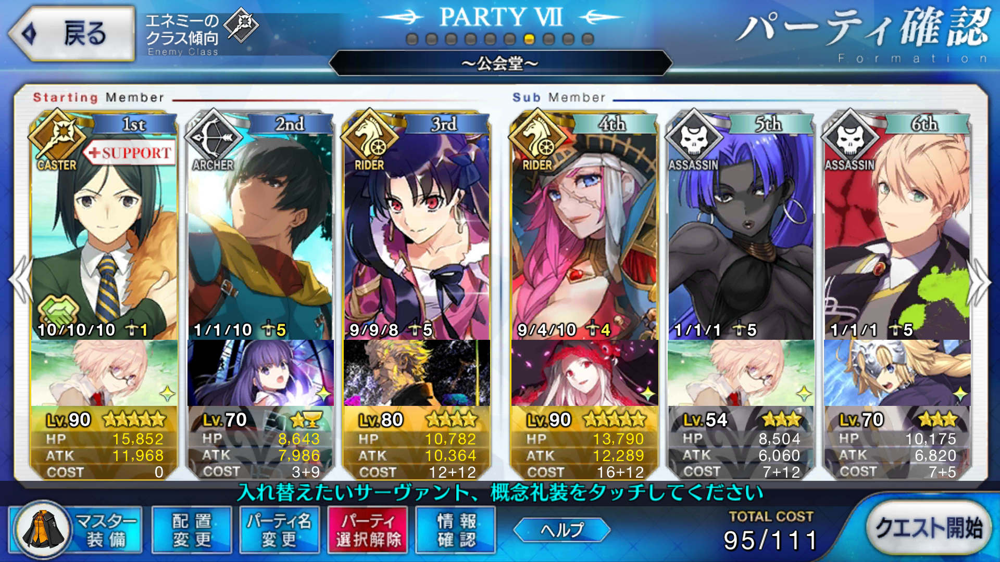
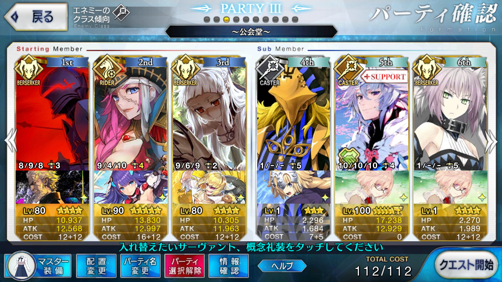

【FGO】セイレム 公会堂 鳳凰の羽根集め 周回
目次
この記事ではFGOフリークエストの周回を扱います。
編成画像にて最終再臨絵のネタバレがあるのでご注意を
基本方針
- 3T周回する
ドロップアイテム
- 鳳凰の羽根
- 叡智の猛火（術）
エネミー構成
- シャンタク（術）のみ
- 3w
編成

1wはいつものステラ
2wは孔明のスキル2,3 + カレスコでイシュタルの宝具
3wは孔明のスキルとドレイク自身のスキルでNPを100まで溜め、凸黒聖杯で一気に削りきる
- これだと17万を削りきれず、1～2万程度残る
- 追撃が気になる場合はマスター礼装を2004年の断片またはアニバーサリーブロンドにしてバフを上乗せしよう
- ライダーの追撃さえあれば倒せるので、事故回避に魔術協会礼装でも良い
後ろ二人は絆を上げたいだけなので関係ない
マスター礼装も自由枠
- 強いて言えば火力補助の2004年の断片、アニバーサリーブロンドが優秀
改善

オダチェン、ステラなし、宝具使用回数2
凸カレスコ1枚、アニバーサリー・ブロンドが必要
1wは勝利への確信＋星の開拓者＋凸ゴールデン捕鯉魚図で星を50個にしてクリティカルで殴る
2wはランスロットの全体宝具で片付ける
3wは魔力放出込みのドレイクの宝具＋追撃で〆
星4サーヴァントは代用候補がそれなりにいる
- 全体バフ持ち、全体宝具持ちのライダー/バーサーカーから選ぶと良い
- 狂ランスロットはクリティカル威力アップ＋全体バフ持ちの水着イシュタルでも代用可能
- 全体バフはなくなるが、凸ゴールデン捕鯉魚図がNP+50であるのを活かすなら、NP獲得スキルを鍛えた金時やアストルフォも採用圏内
- コストを抑えるならダレイオスも候補になるが、聖杯か銀フォウをしっかり積んでおかないとやや火力不足
- 凸カレスコがない場合はメドゥーサの採用も検討できる
1wでバスターが来ない場合でも、ランスロットのカードがあればクリティカル威力上昇で押し切れる……はず
- ランスロットのカードが1枚もない かつ バスターが1枚もないケースは、ドレイクとエルバサのA/Qカードのみの場合ただ1通り
- 確率で言えば3,003分の1であるため、流石にそれは安定性を欠くレベルではないだろう
- 誰か一人のカードしかないパターンも考慮すると、4/3,003 = 0.1％で事故が起きる
周回用キャラ選別
水着イシュタル
全体に3ターン続くBQアップバフが優秀
配布サーヴァント故、イベントさえ走っていれば入手できているという点も優しい
- 2017夏イベントのため、2018夏に復刻する可能性あり
全体Q宝具で、星を出しながら2wをすっとばせる
第2スキルのクリティカル威力アップも地味ながら強力で、1wをクリティカルですっ飛ばすならこれも上げておくと安定感が増す
自身のNPを増加するスキルは持たないので、カレイドスコープや孔明と合わせてNP補助する必要がある
ドレイク
- NP50％チャージと全体バスター宝具で、周回には最適
- スキル3をレベル10にしておけば孔明と合わせてNPを0から100まで一気に溜められる
- レベル6だとNP獲得量は40なので、もう一つNP補助が必要になる
- スター獲得もあるので、追撃にクリティカルを狙いやすいのも良い
- NPを0から100まで溜められるということは、礼装による火力サポートの選択肢が広いということ
- 凸黒聖杯で宝具威力を80％上昇させる、等
- 宝具威力の上がるスキル1もできるだけ高レベルにしておきたい
ランスロット（狂）
星を出しながら2wをすっ飛ばすという意味で、イシュタルの代用にできる
こちらはイシュタルと違って期間限定配布ではなく、恒常星4
宝具レベルやバフ次第ではそこまで火力が出ないので注意
1wまたは3wをクリティカルに頼る場合は選択肢になり得る
イシュタルよりもバスターの枚数や宝具の星出し性能で優れており、全体バフこそ持たないものの安定性に関しては相互互換と言える
坂田金時（騎）
単体宝具だが、3wの相手は2体のみなので十分選択肢に入る
NP50％チャージと高火力の単体宝具で片方を潰し、もう片方は他の単体宝具持ちやクリティカルでなんとかする
- 他の単体宝具持ちと宝具チェインする場合、金時の宝具はオーバーチャージで火力が上昇するため、後ろに回したい
ドレイクと同じく凸黒聖杯も良いが、オーバーチャージでも火力が上がるため、魔性菩薩も選択肢に入る
オジマンディアス
- 単体宝具持ちで、全体にNPを20配れる
- カリスマによる火力バフもあり、総合的な強さはさすがの星5
ケツァル・コアトル
- こちらも単体宝具
- NPチャージは自身のみだが、最大で30％チャージできる
- スキル3のレベルが6でも25％チャージのため、凸虚数でいきなりブッパできる
- NPチャージスキルにスター集中とクリティカルアップが含まれているため、宝具＋クリティカルの追撃で一網打尽にすることも可能
- もちろん、水着イシュタルや狂ランスロットを使って2wで星を出しておく前提ではある
- カリスマによる火力バフもある
ニトクリス（術）
- 1wと2wで連続して宝具を撃つことができる
- 凸カレスコか、カレスコ＋孔明等のNP補助が必要にはなる
- シャンタクの即死率はデフォルト10％でエジプト魔術Lv10がかかっても2倍で20％程度
- ただし、1wはHPが2万程度なのでニトクリスの宝具火力でもバフ次第では十分に潰せる
- スキル2をレベル8以上にしておけば、2wですぐにNPを100％までためることができる
- HP4万のシャンタクが混じっているので、そこには追撃が必要になる
アストルフォ
- NP50％チャージ持ちの全体宝具ライダー
- ドレイクと同じ運用ができる星4
- ただし、再臨に鳳凰の羽根を要求する
- 予めスキル3を使っておくことでスターをある程度自前供給できる
イスカンダル
- とにかく火力を上げることしか考えていないスキル構成の全体宝具ライダー
- 攻撃力、宝具威力、バスター性能と3種の異なるバフを自前で用意しており、カレスコ等のNP補助礼装をつけても3wを蹂躙しやすい
源頼光（狂）
- 星5全体宝具バーサーカー
- シャンタクが魔性であることを利用し、スキル3の魔性特攻に頼る
- スター集中も持っており、クリティカルによる追撃も狙いやすい
水着モードレッド
- 宝具によるリチャージを利用した通称サモさんシステムが強力
- ただし、1wの敵は2体のみなのでリチャージが間に合わない？
- 火力もずば抜けて高いわけではなく、3wを自身の宝具のみで片付けることは不可能
星3以下全体宝具持ちライダー/バーサーカー
- メドゥーサ ティーチ アレキサンダー レジスタンスのライダー ダレイオス
- それぞれ長所があるため、コストを抑えるために採用するのであれば長所を活かせる構成にしたい
メドゥーサ
スキル
鮮血神殿で自身のNPを補助できるところが強力スキルレベル1でもNPを20獲得できるため、未凸カレスコがあればスキル育成の必要がない
- レベル6まで上げれば25獲得でき、凸虚数でも宝具が打てる
火力は控えめのため、気になるなら怪力のレベルを上げておくと良さそう
- 怪力は地味ながら2T持続する
最終再臨やスキル強化に羽根が要求される
- ただし、スキルで要求されるのはスキルレベル8→9のみ
- そこまで上げなくても十分に実用圏内
ティーチ
- 星2ではあるが、火力バフを2種持っているため2wを担当できるか？（未検証）
アレキサンダー
- 3T持続する味方全体への火力バフを2種持っている
- 再臨に羽根が要求されるのが難点か
レジスタンスのライダー
- 火力バフ2種、片方にはスター獲得のおまけがつき、更にNP獲得スキルまである
- 全く無駄のないスキル構成で、更に全体バスター宝具持ち
ダレイオス
- 星3バーサーカーで最も安定して高い火力が出せる
- 銀フォウか聖杯を積んでおくと安定感が増す
スパルタクス
- 自身のNPを30％チャージできる全体宝具バーサーカー
- 星1なのでちゃんとフレポガチャを回していれば宝具レベルを5にしやすく、コスト面でも優秀
- ただし火力自体は低く、2wを片付けるためには相応のバフが必要になる